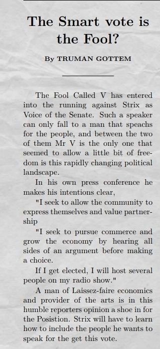
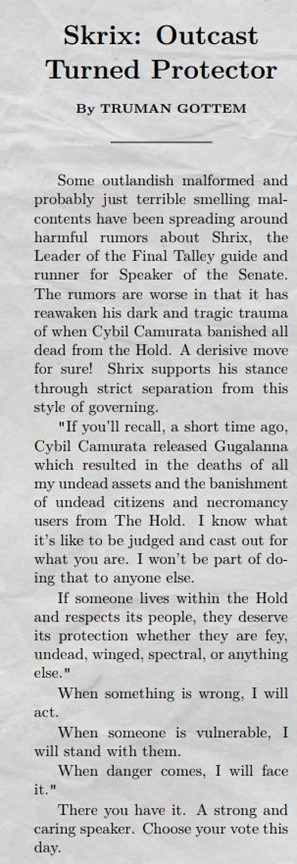
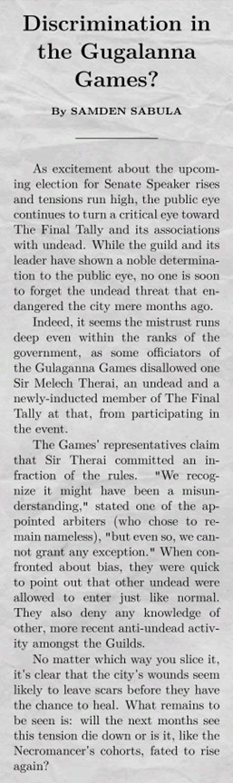
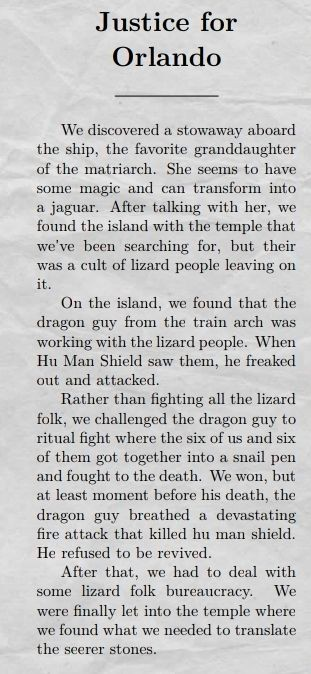
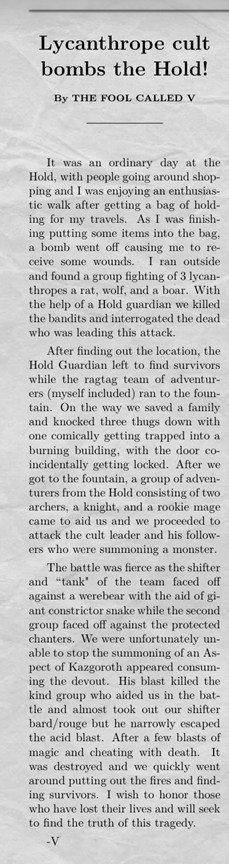

Welcome to the Archive!
Articles
2/26/26
"Gugalanna Games Show Early Signs of Guild Conflicts"
by Sam Sabula
2/28/26

by Truman Gottem
2/28/26

Skrix: Outcast Turned Protector"
by Truman Gottem
3/1/26

"Discrimination in the Gugalanna Games?"
by Sam Sabula
3/7/26

by Truman Gottem
3/8/26

"Lycanthrope Cult bombs the Hold!"
By The Fool Called V